00兩種監測差在哪、要準備什麼
它主動去敲門。每隔一段時間，從外面檢查你的網址能不能正常回應；回應不正常，就寄信給你。
適合：官網、表單頁、任何「應該隨時打得開」的網址。
本篇用：UptimeRobot。
它在原地等你報到。你的排程每次成功跑完，就去「報到」一次；超過約定時間沒報到，它就寄信給你。
適合：備份、對帳、資料同步、定時寄報表這類「看不到畫面」的工作。
本篇用：healthchecks.io。
排程監控這種做法又叫死人開關：原意是火車司機要一直按著的開關，一放手（人出事了）車就自動停。用在這裡的意思是：平常要一直有消息，消息一斷就警報。排程程式當掉、主機關機、網路斷了，都不會有人「主動通知」你，所以要反過來，由監測服務等你報到。
網站監控看不到排程有沒有跑；排程監控也不會去打開你的網站。healthchecks.io 官方文件也寫明，它不適合用來檢查網站開不開得了。4 兩個各管一邊，所以本篇兩個都設。
| 要準備的東西 | 說明 |
|---|---|
| 網站部分 | 一個從外面打得開的網址。只想盯網站的話，做完第 1～7 步就可以。 |
| 排程部分 | 要請維護排程的人修改排程，讓它每次成功跑完後報到一次（第 11 步）。 |
| 一個收得到信的 Email | 兩個服務都把通知寄到這個信箱。 |
01網站監控（UptimeRobot）
本例要盯兩個網址：首頁 https://zerozone.dev/，和第二個網址 https://zerozone.dev/guides/cloudflare/，也就是Cloudflare 架站教學。如果你的網站還沒上線，先照那篇完成部署與綁定網址。
1打開 UptimeRobot，按註冊
到 uptimerobot.com，按右上角的「Get started free」。
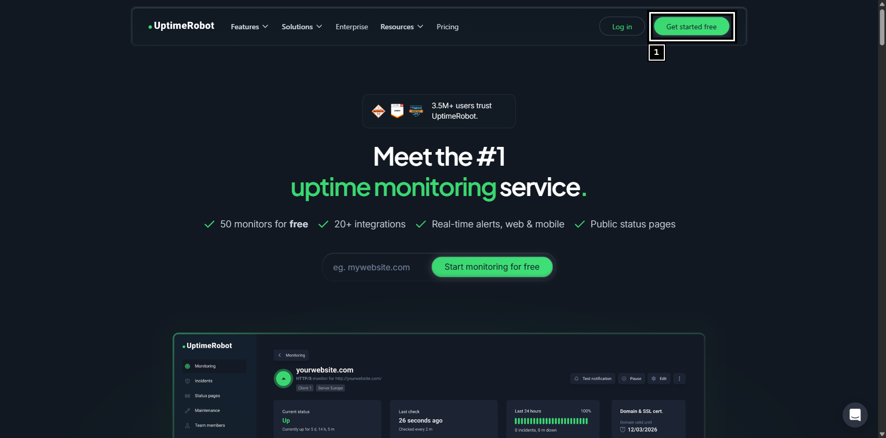
- 按 1「Get started free」。
2填要盯的網址和 Email
註冊頁第一格「Website to monitor」先填你的網址，本例帳號建好時順便建立了第一個監測。
- 「Website to monitor」填網址，本例填
zerozone.dev。 - 選註冊方式：Google、Github 或「Use email」。本例選「Use email」。
- 頁面會要你通過「Confirm you are a human」的真人驗證。這一步請本人操作。
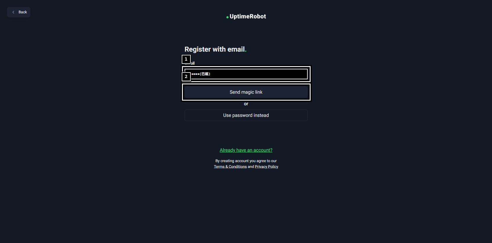
- 1 Email 欄填你的信箱。
- 按 2「Send magic link」。Magic link 是寄到信箱的一次性登入連結，點了就登入，不用設密碼。想設密碼的話改按「Use password instead」。
3去信箱點登入連結
畫面出現「Check your inbox」，代表信已寄出。
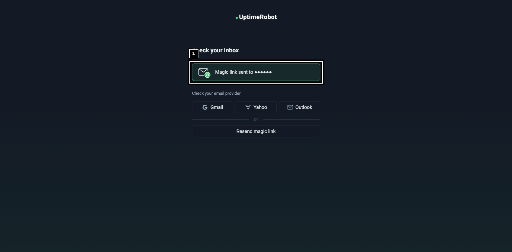
- 看到 1「Magic link sent to …」後，打開信箱。
- 找 UptimeRobot 寄來的確認信，點信裡的連結。收件匣沒有的話，看一下垃圾郵件。
4登入後，確認第一個監測
本例登入後先跳出一個問卷視窗（「你怎麼知道我們的？」），可以直接按右上角的 × 關掉，不填。
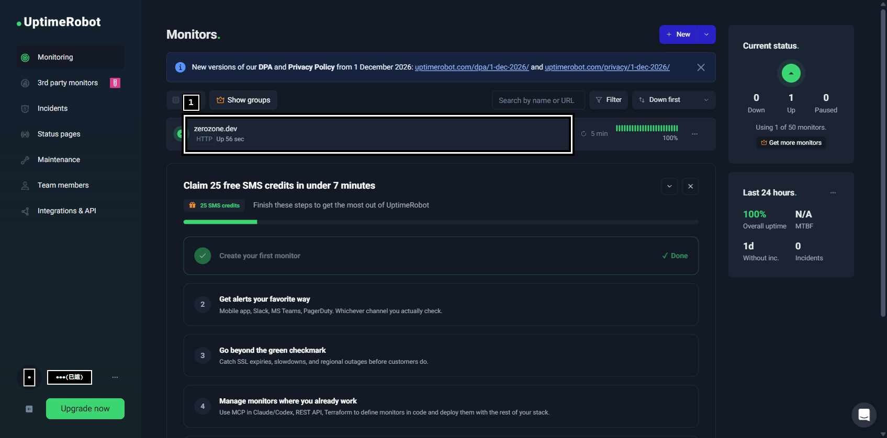
- 1 就是註冊時填的網址。左邊綠色圓點、寫著「Up」，表示最近一次檢查回應正常。Up 是「回應正常」，Down 是「打不開或回應不正常」。清單裡沒有這一項的話，照第 6 步新增。
5確認這個監測的設定
點進監測，再按「Edit」，確認網址、通知方式、檢查間隔。
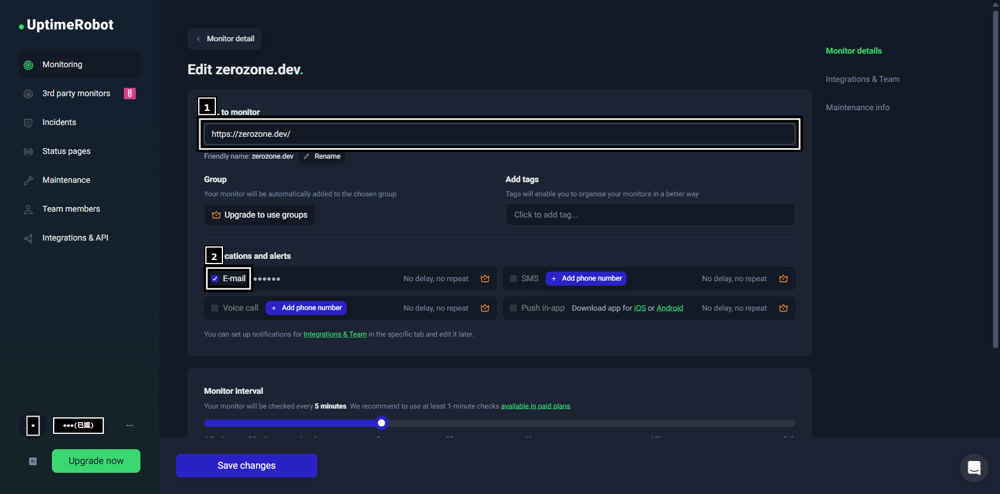
- 1 URL to monitor：要檢查的網址。本例改成完整寫法
https://zerozone.dev/。 - 2 E-mail：要勾起來，出事時才會寄信到你註冊的信箱。Free 方案不含簡訊與語音通話額度，另購項目請看官方方案。1
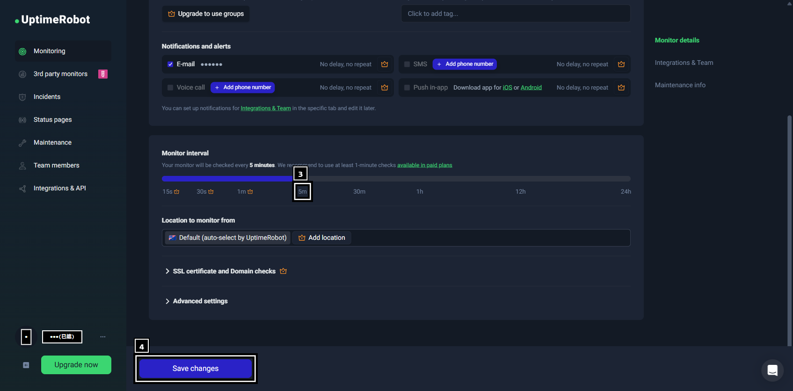
- 3 Monitor interval（檢查間隔）：多久檢查一次。請確認間隔，本例選 5 分鐘（5m）。本例畫面上，比 5 分鐘短、旁邊有皇冠圖示的選項是付費功能。
- 按 4「Save changes」儲存。
6新增第二個網址
回到 Monitors 清單，按右上角的「New」。
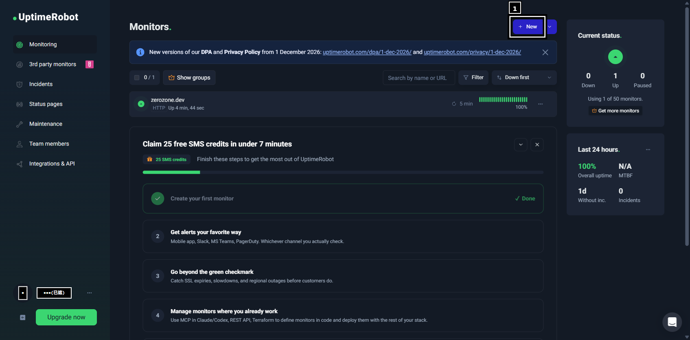
- 按 1「New」。
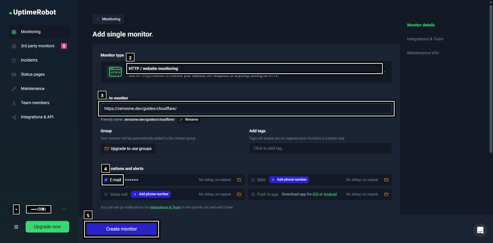
- 2 Monitor type：維持「HTTP / website monitoring」，也就是檢查指定網址能否正常回應。注意：表單頁能開啟，不代表表單能成功送出。
- 3 URL to monitor：填第二個網址，本例
https://zerozone.dev/guides/cloudflare/。 - 4 E-mail：確認有勾。檢查間隔在下方，請確認，本例是 5 分鐘。
- 按 5「Create monitor」。
7確認兩個都是 Up
新監測剛建好會顯示「Preparing…」，第一次檢查成功才會顯示 Up。
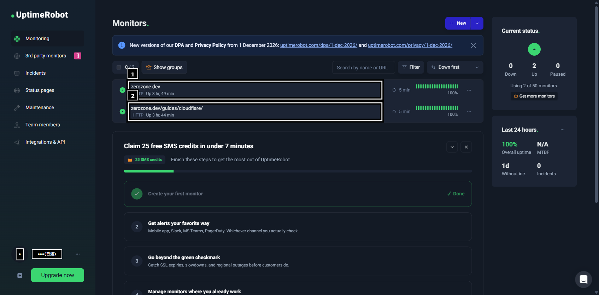
- 1 首頁、2 教學頁，左邊都是綠點，右邊的綠色長條是最近幾次檢查的結果。
- 右側「Current status」顯示 Down 0、Up 2；「Using 2 of 50 monitors」是免費方案已經用了幾個名額。
- 若顯示 Down，先核對網址有沒有打錯，再用瀏覽器確認能否開啟。
- 綠燈只代表網站正常，不代表信寄得到。要確認收信，可以在監測頁使用「測試通知」功能（本例畫面上的按鈕是「Test Notification」）。按下去會先跳出一個對話框，列出會收到通知的聯絡人，再按對話框裡的「Send test notifications」才會寄出；寄出後確認選的信箱真的收到測試通知。6
02排程監控：沒報到才通知（healthchecks.io）
本例要盯的排程每 4 小時跑一次（台灣時間 0:01、4:01、8:01……），每次跑完、而且成功了，最後一步就去 healthchecks.io 報到一次。
- 監測項目（Check）：healthchecks.io 上的一個「報到簿」，一個排程對一個。
- 報到（Ping）：排程去打開一個專屬網址，等於說「我跑完了」。
- 報到網址（Ping URL）：每個監測項目專屬的網址，長得像
https://hc-ping.com/<專屬編號>。網址最後那一串是這個監測項目的專屬編號（官方叫 UUID）。
8註冊 healthchecks.io
到 healthchecks.io，按右上角的「Sign Up」。
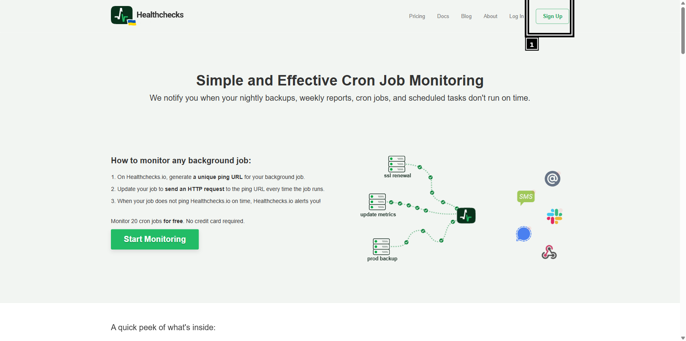
- 按 1「Sign Up」。
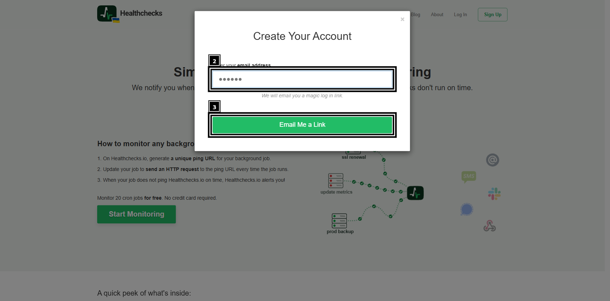
- 2 填你的 Email。
- 按 3「Email Me a Link」。這裡一樣不用設密碼，用寄到信箱的登入連結登入。
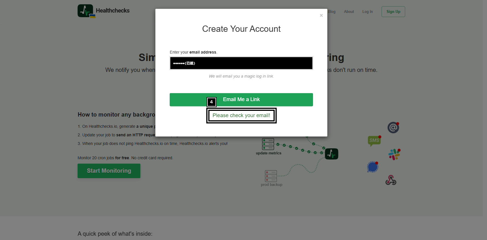
- 出現 4「Please check your email!」後，到信箱點 healthchecks.io 寄來的登入連結。這一步請本人操作。
9登入後，準備一個監測項目
本例新帳號有一個「My First Check」，直接改名使用。如果你的清單沒有這一項，先新增一個監測項目。
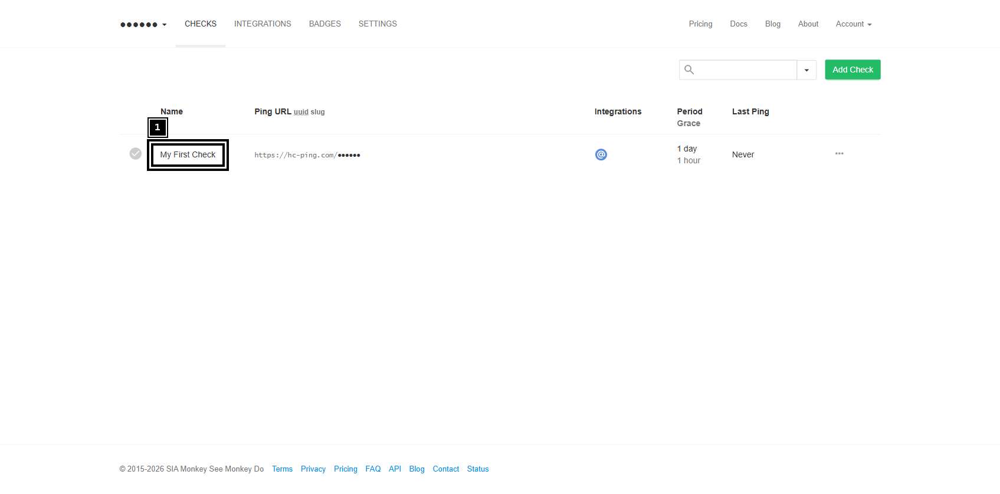
- 點 1「My First Check」這個名字，會跳出改名視窗。
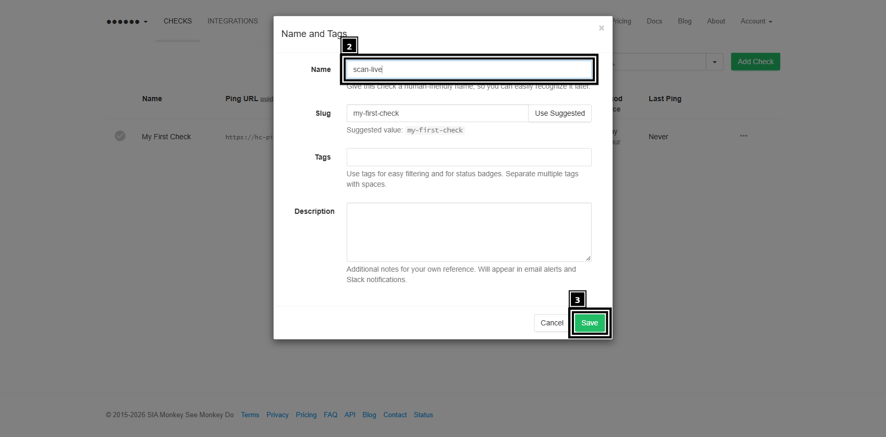
- 2 Name：填一個認得出是哪個排程的名字，本例
scan-live。下面的 Slug、Tags、Description 可以不填。 - 按 3「Save」。
10設定多久沒報到要通知
在清單上點這個監測項目的「Period / Grace」欄位，會跳出時間設定視窗。下方選 Simple（固定間隔），再依自己的排程填兩個時間。
- 兩次報到之間應隔多久（Period）：排程正常應該多久報到一次。3
- 遲到後再等多久（Grace Time）：過了 Period 還沒報到時，再多等多久才發警報。3
- 也就是：最後一次報到 ＋ Period ＋ Grace Time，這段時間內都沒有再報到，就會變成 Down，並透過設定的通知方式發出警報。4
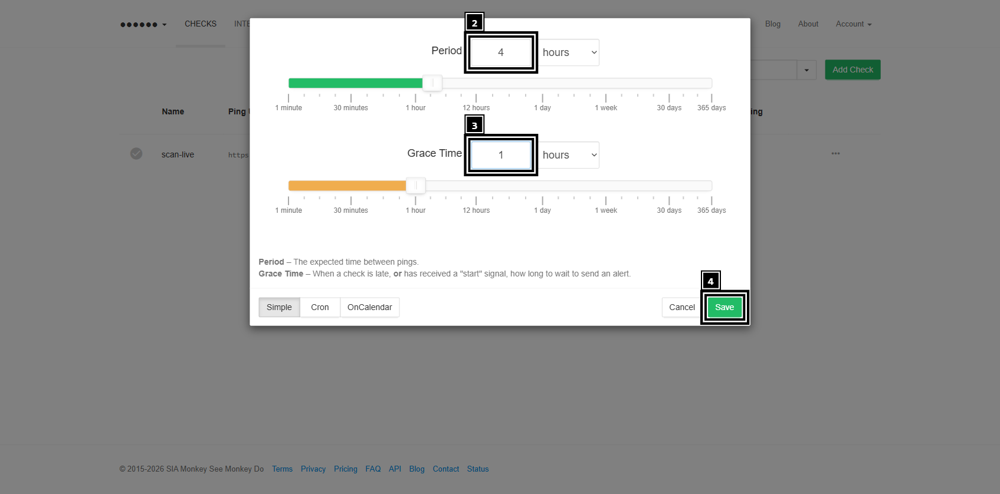
- 2 Period：本例排程每 4 小時跑一次，填
4，單位選hours。 - 3 Grace Time：本例填
1hours。排程執行要時間，偶爾也會晚一點，留一點寬限比較不會誤報。 - 按 4「Save」。
11把報到網址交給排程
清單上「Ping URL」那一欄就是這個監測項目的報到網址。請有權限的維護人員設定排程，讓它每次成功跑完時報到一次。
- 請有權限的維護人員用公司核可的密碼管理工具交接。
- 網址放進只有排程帳號和授權管理者讀得到的設定檔，或祕密管理工具。
- 禁止寫進程式碼、共用文件或日誌（log）。
- 不要共用帳號，也不要轉傳登入連結。
- 不要在截圖或錄影中顯示這個設定檔的內容。
維護人員可以參考下面這個 Bash 範例。網址不直接寫在命令裡，而是放在變數 HEALTHCHECK_URL：先由維護人員從受保護的設定載入這個變數，執行時不要開啟除錯追蹤（例如 set -x），而且只在工作成功之後才執行這一行。
- curl 是一個在命令列打開網址的小工具。這一行的意思是：打開報到網址，每次嘗試最多等 10 秒，遇到可重試的暫時性錯誤最多再試 3 次，所以整體時間可能更久。7
- 官方接受用 GET、HEAD、POST 三種方式報到；同一個監測項目每分鐘不要報到超過 5 次。5
- 本例的排程是程式自己處理：網址放在主機上一個只有排程帳號讀得到的設定檔裡，每一輪成功結束才報到。
12先手動報到一次，確認變綠燈
設好之後，請維護人員用同樣的方式（載入變數後執行上面那行 curl）手動報到一次，再回 healthchecks.io 重新整理。
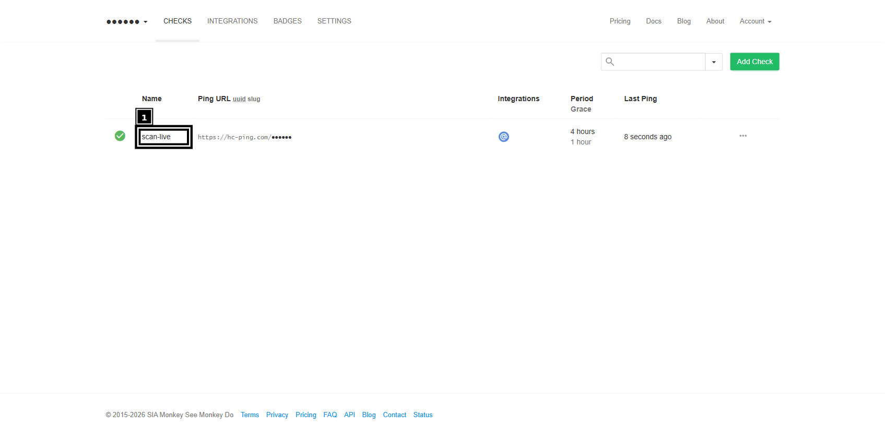
- 先看 curl 印出的回應內文是不是
OK；只看到成功連線還不夠，回應內文也可能是找不到項目或次數太多的訊息。5 - 再回同一個監測項目確認：1 scan-live 左邊變成綠色勾勾（Up，有準時報到），「Last Ping」已更新，本例是「8 seconds ago」。還沒報到過的項目是灰色的「New」。4
13等排程自己跑一次，對時間
手動報到只證明網址是對的；還要等下一輪由排程自己執行，確認是排程自己來報到。
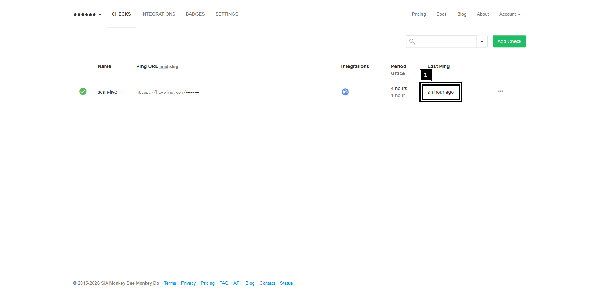
- 本例排程在台灣時間 12:01 開始，主機的紀錄寫著 12:01:18 報到；healthchecks.io 記錄的 1 這次報到時間也是 12:01:18，對得上（截圖是約一小時後拍的，所以顯示「an hour ago」）。
- 之後若超過 Period 加 Grace Time、仍未報到，這個項目會變成 Down。請在 Checks 清單確認這個項目的 Email 通知已開啟（本例畫面上「Integrations」欄的 @ 圖示）。8
- 想確認排程的通知信真的收得到：不要故意把正式的排程停掉。可以另外建一個測試用的監測項目、手動報到一次，然後等超過它的 Period 加 Grace Time，確認信箱收到通知，再把測試項目刪掉。
03這要花多少錢
本篇兩個服務都用免費方案，本例註冊時都沒有要求填信用卡。以下是 2026-11-21 查詢官方價格頁的內容，方案可能調整，請以官方頁面為準。
| 服務 | 費用 | 免費方案的限制 |
|---|---|---|
| UptimeRobot（Free） | 0 元 | 最多 50 個監測；最短每 5 分鐘檢查一次；資料保留 3 個月；最多 5 個整合（例如接 Slack）。Free 方案不含簡訊與語音通話額度，另購項目請看官方方案。官方寫明個人和商業用途都可以用，不需要信用卡。1 |
| healthchecks.io（Hobbyist） | 0 元 | 最多 20 個監測項目；每個項目保留最近 100 筆紀錄。簡訊、WhatsApp 通知額度只列在付費方案。本文查詢的官方頁面沒有說明免費方案能不能商用，請自行向官方確認。2 |
| Email 通知 | 0 元 | 本例兩邊都用帳號註冊的 Email 收通知，畫面上預設就有。 |
本篇的用量：UptimeRobot 用了 2 個監測、healthchecks.io 用了 1 個監測項目，都遠低於上限。
04常見問題
- 收到「Down」的信，第一步要做什麼？
- 網站的信：自己用手機和電腦各開一次網址，確認是不是真的打不開，再聯絡維護網站的人。排程的信：請維護排程的人看一下排程主機是否開著、排程最近一次有沒有出錯。恢復正常後，監測畫面會變回綠色的 Up。
- 網站監控顯示 Up，排程監控也要設嗎？
- 要。網站監控只會檢查網址能不能回應，看不到背後的排程有沒有跑；兩種監測管的是不同的事，見「兩種監測差在哪」。
- 為什麼 Period 填 4 小時，還要多 1 小時寬限？
- 排程每次執行都要花一點時間，主機忙的時候也可能晚幾分鐘。沒有寬限的話，晚一點點就會誤報。本例設 1 小時，代表超過約 5 小時沒報到才會變成 Down。
- 報到網址不小心外流了怎麼辦？
- 先建立一個新的監測項目，填回原本的 Period、Grace Time 和通知方式，請維護人員把排程改用新的報到網址。儘快確認新項目收到排程的報到，再刪除舊項目，這樣中間不會有沒人盯的空窗。切換期間如果懷疑有人冒充報到，先請維護人員核對主機上的執行紀錄。
- 排程失敗的時候，也會去報到嗎？
- 要看排程怎麼寫。本例只在「成功跑完」時才報到，所以失敗或當掉都等於沒報到，時間到了就會變成 Down。請維護人員照這個原則設定。
- 沒收到通知信？
- 先看垃圾郵件匣，把兩個服務的寄件者加入聯絡人。網站監控可以用監測頁的測試通知功能，確認所選信箱收得到；排程監控可以照第 13 步，用另外建的測試項目驗證，不要停掉正式的排程。
- 免費方案會不會突然被收錢？
- 本例註冊時兩邊都沒有填信用卡，也沒有開付費功能。本例畫面上「Upgrade now」、「Get more monitors」、有皇冠圖示的選項都是付費功能，不用去按。
需要幫忙設定網站或排程告警？
告訴零域你想監測哪些網站或定時工作，以及希望由誰收到通知。我們會先和你確認需求與服務範圍。請勿附上密碼或報到網址。
聯絡零域，討論監控設定